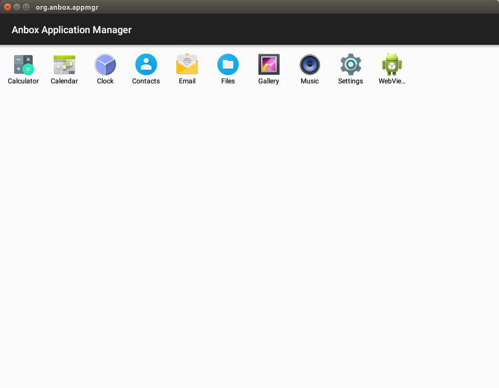

4.3 Anbox 容器管理服务
1. Anbox 安装过程分析
Anbox 是在像 Ubuntu 这样的普通 GNU/Linux 系统上，基于容器启动完整 Android 系统的方案。
当前安装过程由多个步骤组成，这些步骤将向主机系统中添加额外的组件，这些组件包括：
- 由于没有发行版内核同时启用 binder 和 ashmem，因此需要它们的源码树之外的内核模块
- 为
/dev/binder和/dev/ashmem设置正确权限的 udev 规则 - upstart 或 systemd 任务，用于作为用户会话的一部分启动 Anbox 会话管理器。
为了使 Anbox 的安装过程尽可能简单，Anbox 官方已经在一个 snap (参考 https://snapcraft.io) 中打包了必须的步骤，称为 “anbox-installer”。这个安装器将执行所有必须的步骤。可以通过运行如下命令，在系统上安装 Anbox 提供对 snaps 的支持：
$ snap install --classic anbox-installer
另外，还可以通过如下命令获得安装器脚本：
$ wget https://raw.githubusercontent.com/anbox/anbox-installer/master/installer.sh -O anbox-installer
要通过 Anbox 的安装器脚本安装 Anbox 的话，简单地调用即可：
$ anbox-installer
这将指导完成安装过程。
anbox-installer 安装器脚本的实现是这样的：
#!/bin/bash
echo "Anbox (Android in a Box) - Installer"
echo
echo
echo "IMPORTANT: THIS IS ALPHA LEVEL SOFTWARE. EXPECT INSTABILITY AND"
echo " BUGS !!!!!"
echo
echo "IMPORTANT: ALSO PLEASE BE AWARE THAT WE DON'T PROVIDE FULL"
echo " CONFINEMENT FOR THE SNAP YET !!!!"
echo
echo
echo "PLEASE NOTE: This script will require root access on your system"
echo "to install all necessary things. It will prompt you to enter your"
echo "password when required."
echo
echo
if [ "$(id -u)" -eq 0 ] ; then
echo "ERROR: Don't run the anbox-installer as root or via sudo. Simply"
echo " invoke it with your regular user. The script will use sudo"
echo " on its own when needed."
exit 1
fi
if ! uname -a | grep -q x86_64 ; then
echo "ERROR: We only have support for x86 64 bit devices today. As"
echo " your system has a different architecture we can't"
echo " support it yet."
exit 1
fi
SUPPORTED_DISTROS=("Ubuntu" "LinuxMint" "neon" "elementary" "Zorin")
DISTRIB_ID="$(lsb_release -i -s)"
function contains() {
local n=$#
local value=${!n}
for ((i=1;i < $#;i++)) {
if [ "${!i}" == "${value}" ]; then
echo "y"
return 0
fi
}
return 1
}
if [ "$(contains "${SUPPORTED_DISTROS[@]}" "$DISTRIB_ID")" != "y" ]; then
echo "ERROR: You are running the installer on an unsupported distribution."
echo " At the moment we only support the following distributions:"
echo
printf "%s, " "${SUPPORTED_DISTROS[@]}" | cut -d "," -f 1-${#SUPPORTED_DISTROS[@]}
echo
echo "If your distribution is in the list but you still see this message, open"
echo "an issue here: https://github.com/anbox/anbox-installer"
exit 1
fi
echo
echo "What do you want to do?"
echo
echo " 1. Install Anbox"
echo " 2. Uninstall Anbox"
echo
echo "Please enter your choice [1-2]: "
read -r action
echo
echo
[[ -n "$(which snap)" ]] || {
echo "ERROR: Your system does not support snaps. Please have a look"
echo " at https://snapcraft.io/ to find out how you can add"
echo " support for snaps on your system."
exit 1
}
uninstall() {
set -x
sudo snap remove anbox
if [ -e /etc/apt/sources.list.d/morphis-ubuntu-anbox-support-xenial.list ]; then
ppa_purged_installed=0
if ! dpkg --get-selections | grep -q ppa-purge ; then
sudo apt install -y ppa-purge
ppa_purged_installed=1
fi
sudo apt install -y ppa-purge
sudo ppa-purge -y ppa:morphis/anbox-support
if [ "$ppa_purged_installed" -eq 1 ]; then
sudo apt purge ppa-purge
fi
fi
set +x
}
if [ "$action" == "2" ]; then
echo "This will now remove the Android in a Box runtime environment"
echo "from your device. Do you really want this?"
echo
echo "Please be aware that this will also remove any user data"
echo "stored inside the runtime environment."
echo
echo "Please type 'I AGREE' followed by pressing ENTER to continue"
echo "or type anything else to abort:"
read -r input
if [ "$input" != "I AGREE" ]; then
exit 1
fi
echo
uninstall
echo
echo "Successfully removed anbox!"
echo
exit 0
fi
if [ "$action" != "1" ]; then
echo "ERROR: Invalid option selected!"
exit 1
fi
echo "This is the installer for the anbox runtime environment. It will"
echo "install certain things on your system to ensure all requirements"
echo "are available for anbox to work correctly."
echo
echo "In summary we will install the following things:"
echo
echo " * Add the anbox-support ppa ppa:morphis/anbox-support to the"
echo " host system"
echo " * Install the anbox-modules-dkms deb package from the ppa"
echo " which will add kernel modules for ashmem and binder which are"
echo " required for the Android container to work."
echo " * Configure binder and ashmem kernel modules to be loaded"
echo " automatically on boot."
echo " * Install the anbox-common package from the ppa which will"
echo " - Add an upstart job for the current user $USER which will"
echo " start the anbox runtime on login."
echo " - Add a X11 session configuration file to allow the system"
echo " application launcher (Unity7, Gnome Shell, ..) to find"
echo " available Android applications."
echo
echo "Please type 'I AGREE' followed by pressing ENTER to continue"
echo "or type anything else to abort:"
read -r input
if [ "$input" != "I AGREE" ]; then
exit 1
fi
echo
echo
echo "Starting installation process ..."
echo
cleanup() {
local err=$?
trap - EXIT
echo "ERROR: Installation failed. Removing all parts of Anbox again."
uninstall
exit $err
}
trap cleanup HUP PIPE INT QUIT TERM EXIT
set -ex
sudo add-apt-repository -y 'ppa:morphis/anbox-support'
# Users tend to have APT repositories installed which are not properly
# authenticated and because of that `apt update` will fail. We ignore
# this and proceed with the package installation. If the installation
# of a specific package fails this will indicate our point of abort.
sudo apt update || true
sudo apt install -y anbox-common
# Install kernel drivers only if necessary and let the user use the
# ones build into his kernel otherwise.
if [ -c /dev/binder ] && [ -c /dev/ashmem ]; then
echo "Android binder and ashmem seems to be already enabled in kernel.";
else
sudo apt install -y linux-headers-generic anbox-modules-dkms
sudo modprobe binder_linux
sudo modprobe ashmem_linux
fi
if snap info anbox | grep -q "installed:" ; then
sudo snap refresh --edge anbox || true
else
sudo snap install --edge --devmode anbox
fi
set +x
echo
echo "Done!"
echo
echo "To ensure all changes made to your system you should now reboot"
echo "your system. If you don't do this no Android applications will"
echo "show up in the system application launcher."
trap - EXIT
anbox-installer 安装器脚本中的 echo 打印输出有点多，同时这个脚本还提供了移除 anbox 的功能。安装 Anbox 的工作主要由如下这几行代码完成：
sudo add-apt-repository -y 'ppa:morphis/anbox-support'
. . . . . .
sudo apt update || true
sudo apt install -y anbox-common
# Install kernel drivers only if necessary and let the user use the
# ones build into his kernel otherwise.
if [ -c /dev/binder ] && [ -c /dev/ashmem ]; then
echo "Android binder and ashmem seems to be already enabled in kernel.";
else
sudo apt install -y linux-headers-generic anbox-modules-dkms
sudo modprobe binder_linux
sudo modprobe ashmem_linux
fi
if snap info anbox | grep -q "installed:" ; then
sudo snap refresh --edge anbox || true
else
sudo snap install --edge --devmode anbox
fi
set +x
. . . . . .
trap - EXIT
这段代码，通过三个步骤完成 Anbox 的安装。
第一步，安装 anbox-common
sudo add-apt-repository -y 'ppa:morphis/anbox-support'
. . . . . .
sudo apt update || true
sudo apt install -y anbox-common
anbox-common 包的安装的文件如下：
$ dpkg -L anbox-common
/.
/etc
/etc/X11
/etc/X11/Xsession.d
/etc/X11/Xsession.d/68anbox
/usr
/usr/share
/usr/share/doc
/usr/share/doc/anbox-common
/usr/share/doc/anbox-common/README.Debian
/usr/share/doc/anbox-common/changelog.gz
/usr/share/doc/anbox-common/copyright
/usr/src
第二步，安装 binder 和 ashmem 驱动
sudo apt install -y linux-headers-generic anbox-modules-dkms
sudo modprobe binder_linux
sudo modprobe ashmem_linux
第三步，通过 snap 的方式安装 Anbox 包
sudo snap install --edge --devmode anbox
Anbox 包通过 snap 的方式进行安装。
2. Anbox 容器管理服务
整体看来，Anbox 的安装过程安装了两个组件，一是 binder 和 ashmem 内核驱动；二是 Anbox，Anbox 又由 anbox-common 和 anbox snap 组成。
通过如下命令可以看到Anbox snap 的信息：
$ snap info anbox
name: anbox
summary: Android in a Box
publisher: morphis
description: |
Runtime for Android applications which runs a full Android system
in a container using Linux namespaces (user, ipc, net, mount) to
separate the Android system fully from the host.
snap-id: Nr9K6UJaIOD8wHpDEQl16nabFFt9LLEQ
commands:
- anbox
- anbox.collect-bug-info
services:
anbox.container-manager: simple, enabled, inactive
tracking: edge
installed: 3-7266fe2 (65) 361MB devmode
refreshed: 2017-11-17 21:37:23 +0800 CST
channels:
stable: –
candidate: –
beta: 1-dev (15) 357MB devmode
edge: 3-7266fe2 (65) 361MB devmode
Anbox 向主机系统中安装了 2 个命令，anbox 和 anbox.collect-bug-info，以及一个 service，anbox.container-manager，即 Anbox 的容器管理器服务。
通过 Anbox 安装器安装 Anbox 之后，service 会自动启动。通过如下命令可以查看这个服务的当前状态：
$ sudo systemctl status snap.anbox.container-manager
● snap.anbox.container-manager.service - Service for snap application anbox.container-manager
Loaded: loaded (/etc/systemd/system/snap.anbox.container-manager.service; enabled; vendor preset: enabled)
Active: active (running) since 五 2017-12-01 09:55:46 CST; 3min 54s ago
Process: 25619 ExecStop=/usr/bin/snap run --command=stop anbox.container-manager (code=exited, status=0/SUCCESS)
Main PID: 30438 (anbox)
Tasks: 10
Memory: 1.8M
CPU: 74ms
CGroup: /system.slice/snap.anbox.container-manager.service
├─30438 /snap/anbox/65/usr/bin/anbox container-manager --data-path=/var/snap/anbox/common/ --android-image=/snap/anbox/
└─30644 [lxc monitor] /var/snap/anbox/common/containers default
12月 01 09:55:46 ThundeRobot anbox.container-manager[30438]: + [ ! -e /snap/anbox/65/android.img ]
12月 01 09:55:46 ThundeRobot anbox.container-manager[30438]: + start
12月 01 09:55:46 ThundeRobot anbox.container-manager[30438]: + mkdir -p /var/snap/anbox/common/lxc
12月 01 09:55:46 ThundeRobot anbox.container-manager[30438]: + /snap/anbox/65/bin/anbox-bridge.sh start
12月 01 09:55:46 ThundeRobot anbox.container-manager[30438]: + echo Y
12月 01 09:55:46 ThundeRobot anbox.container-manager[30438]: + tee /sys/module/fuse/parameters/userns_mounts
12月 01 09:55:46 ThundeRobot anbox.container-manager[30438]: Y
12月 01 09:55:46 ThundeRobot anbox.container-manager[30438]: + AA_EXEC=/snap/anbox/65/usr/sbin/aa-exec -p unconfined --
12月 01 09:55:46 ThundeRobot anbox.container-manager[30438]: + [ ! -d /sys/kernel/security/apparmor ]
12月 01 09:55:46 ThundeRobot anbox.container-manager[30438]: + exec /snap/anbox/65/usr/sbin/aa-exec -p unconfined -- /snap/anbox/65
当 Anbox 的容器管理服务正常运行时，通过在应用列表中，点击 Anbox 应用，如下图这样：
可以启动 Anbox 会话。当 Anbox 的容器管理服务起动时，它会监听一个 Unix 域 Socket，/run/anbox-container.socket。（这个地址在 anbox/src/anbox/container/service.cpp 文件的 Service::create() 函数中，从 anbox::SystemConfiguration::container_socket_path() 获得）。
当启动 Anbox 应用，即会话管理器时，它会通过 Unix 域 Socket 与容器管理服务建立连接。容器管理服务接收到连接，且容器还没有启动时，它会挂载 Android 系统镜像，起动 LXC 容器，并在容器内起动 Android 系统。
同时会话管理器与主机系统上的 ADB 服务建立连接。如：
$ ps -aux | grep anbox
hanpfei+ 15883 3.3 1.0 3024640 175500 ? Sl 19:01 0:34 /usr/bin/python3 /usr/bin/remarkable /home/hanpfei0306/data/MyProjects/hanpfei-documents/source/_posts/anbox_container_manager_service.md
root 16732 0.1 0.0 569980 12288 ? Ssl 19:17 0:00 /snap/anbox/x1/usr/bin/anbox container-manager --data-path=/var/snap/anbox/common/ --android-image=/snap/anbox/x1/android.img --daemon
hanpfei+ 16765 4.5 0.2 335372 44676 ? Sl 19:17 0:00 /snap/anbox/x1/usr/bin/anbox launch --package=org.anbox.appmgr --component=org.anbox.appmgr.AppViewActivity
root 16794 0.0 0.0 36776 3692 ? Ss 19:17 0:00 /snap/anbox/current/libexec/lxc/lxc-monitord /var/snap/anbox/common/containers 14
hanpfei+ 16917 0.0 0.2 1281208 42556 ? Sl 19:18 0:00 /snap/anbox/x1/usr/bin/anbox session-manager
root 16931 0.0 0.0 576280 8216 ? Ss 19:18 0:00 [lxc monitor] /var/snap/anbox/common/containers default
100000 16940 0.0 0.0 7920 2540 ? Ss 19:18 0:00 /system/bin/sh /anbox-init.sh
100000 16999 0.0 0.0 16472 4068 ? Sl 19:18 0:00 /system/bin/anboxd
hanpfei+ 17087 0.0 0.0 19300 936 pts/2 R+ 19:18 0:00 grep --color=auto anbox
$ adb devices
List of devices attached
emulator-5558 device
$ lsof -i | grep adb
adb 30288 hanpfei0306 6u IPv4 23788668 0t0 TCP localhost:5037 (LISTEN)
adb 30288 hanpfei0306 7u IPv4 27391368 0t0 TCP localhost:42048->localhost:5559 (ESTABLISHED)
$ lsof -i | grep 42048
anbox 16917 hanpfei0306 29u IPv4 27385836 0t0 TCP localhost:5559->localhost:42048 (ESTABLISHED)
adb 30288 hanpfei0306 7u IPv4 27391368 0t0 TCP localhost:42048->localhost:5559 (ESTABLISHED)
此时可以通过 adb 命令查看 Anbox 启动的 Android 系统的状况，如下面这样：
$ adb devices
List of devices attached
emulator-5558 device
$ adb logcat
--------- beginning of system
12-01 01:57:25.245 16 16 I vold : Vold 3.0 (the awakening) firing up
12-01 01:57:25.245 16 16 V vold : Detected support for: ext4 vfat
12-01 01:57:25.260 16 16 E vold : Failed to open default fstab /fstab.goldfish: Operation not permitted
12-01 01:57:25.260 16 16 E vold : Error reading configuration... continuing anyways: Operation not permitted
12-01 01:57:25.264 16 25 D vold : e4crypt_init_user0
12-01 01:57:25.264 16 25 D vold : e4crypt_prepare_user_storage for volume null, user 0, serial 0, flags 1
12-01 01:57:25.264 16 25 D vold : Preparing: /data/system/users/0
12-01 01:57:25.264 16 25 D vold : Preparing: /data/misc/profiles/cur/0
12-01 01:57:25.264 16 25 D vold : Preparing: /data/misc/profiles/cur/0/foreign-dex
12-01 01:57:25.264 16 25 D vold : Preparing: /data/system_de/0
12-01 01:57:25.264 16 25 D vold : Preparing: /data/misc_de/0
12-01 01:57:25.264 16 25 D vold : Preparing: /data/user_de/0
当 Anbox 起动的 Android 系统内所需的应用程序都启动完毕时，通过 Anbox 应用将可以看到 Android 系统的桌面，可以看到 Android 系统中的应用，如下图：

Anbox 项目写了一个名为 org.anbox.appmgr 的 Java 应用程序，用以替代原始 Android 系统中的 Launcher，以展示已安装应用列表。随后就可以像操作普通的桌面 Linux 系统中的应用那样操作 Android 内的应用了。
此时，查看主机 Linux 系统中与 Anbox 有关的进程，可以看到如下这些：
$ ps -aux | grep anbox
root 30438 0.0 0.0 373372 12144 ? Ssl 09:55 0:00 /snap/anbox/65/usr/bin/anbox container-manager --data-path=/var/snap/anbox/common/ --android-image=/snap/anbox/65/android.img --daemon
hanpfei+ 30630 0.6 1.7 2770120 280580 ? Sl 09:57 0:07 /snap/anbox/65/usr/bin/anbox session-manager
root 30644 0.0 0.0 379672 8016 ? Ss 09:57 0:00 [lxc monitor] /var/snap/anbox/common/containers default
100000 30652 0.0 0.0 7920 6516 ? Ss 09:57 0:00 /system/bin/sh /anbox-init.sh
100000 30711 0.0 0.0 16728 9240 ? Sl 09:57 0:00 /system/bin/anboxd
110000 31209 0.0 0.7 1074676 116412 ? Sl 09:57 0:00 org.anbox.appmgr
进程号为 30438 和 30644 的两个进程组成了容器管理器服务。进程号为 30630 的进程为我们启动的 Anbox 应用。进程号为 30652，30711，和 31209 的几个进程，实际为 Anbox 启动的容器中运行的 Android 系统的进程。Anbox 的整体设计可以参考 Anbox 一文。
3. Anbox snap
Anbox 应用通过 snap 方式打包，下载 Anbox 的源码，并在源码目录下执行 snapcraft，可以生成 anbox 的 .snap 文件：
$ mkdir android-images
$ cp /path/to/android.img android-images/android.img
$ snapcraft
生成的 .snap 文件还可以通过如下命令进行安装：
$ snap install --dangerous --devmode anbox_3-7266fe2_amd64.snap
通过 Anbox 的 snapcraft.yaml 文件，可以对 Anbox 运行时、命令和服务有更深入的了解。Anbox 的 snapcraft.yaml 文件长这样：
name: anbox
version: 3
version-script: |
if [ "$SNAPCRAFT_GRADE" = "stable" ]; then
echo $SNAPCRAFT_PROJECT_VERSION
else
echo $SNAPCRAFT_PROJECT_VERSION-$(git rev-parse --short HEAD)
fi
summary: Android in a Box
description: |
Runtime for Android applications which runs a full Android system
in a container using Linux namespaces (user, ipc, net, mount) to
separate the Android system fully from the host.
confinement: devmode
grade: devel
slots:
# Depending on in which environment we're running we either need
# to use the system or session DBus so we also need to have one
# slot for each.
dbus-session:
interface: dbus
bus: system
name: org.anbox
dbus-system:
interface: dbus
bus: system
name: org.anbox
apps:
anbox:
command: bin/anbox-wrapper.sh
container-manager:
command: bin/container-manager.sh start
stop-command: bin/container-manager.sh stop
daemon: simple
collect-bug-info:
command: bin/collect-bug-info.sh
parts:
android-images:
plugin: dump
# This needs to be any directory but not the root one as if we use
# it we get superious permissions errors with the copied .git tree
source: data
build-packages:
- wget
install: |
LOCAL_IMAGE=$SNAPCRAFT_PART_INSTALL/../../../android-images/android.img
if [ -f $LOCAL_IMAGE ]; then
echo "Using local image $LOCAL_IMAGE"
cp $LOCAL_IMAGE $SNAPCRAFT_PART_INSTALL/android.img
else
IMAGE_PATH=
IMAGE_NAME=
ARCH=$(uname -m)
case "$ARCH" in
x86_64)
IMAGE_PATH="2017/07/13"
IMAGE_NAME="android_3_amd64.img"
;;
arm*)
IMAGE_PATH="2017/06/12"
IMAGE_NAME="android_1_armhf.img"
;;
*)
echo "ERROR: Unknown architecture $ARCH"
exit 1
;;
esac
# FIXME: downloading with a source: field doesn't work as snapcraft
# expects the downloaded file to be an archive it can extract.
echo "Downloading image..."
wget http://build.anbox.io/android-images/$IMAGE_PATH/$IMAGE_NAME
mv $IMAGE_NAME $SNAPCRAFT_PART_INSTALL/android.img
fi
prime:
- android.img
anbox-common:
plugin: dump
source: scripts
organize:
snap-wrapper.sh: bin/anbox-wrapper.sh
container-manager.sh: bin/container-manager.sh
anbox-bridge.sh: bin/anbox-bridge.sh
collect-bug-info.sh: bin/collect-bug-info.sh
prime:
- bin/anbox-bridge.sh
- bin/anbox-wrapper.sh
- bin/container-manager.sh
- bin/collect-bug-info.sh
apparmor:
plugin: nil
stage-packages:
- apparmor
lxc:
source: https://github.com/lxc/lxc
source-type: git
source-tag: lxc-2.0.7
build-packages:
- libapparmor-dev
- libcap-dev
- libgnutls28-dev
- libseccomp-dev
- pkg-config
plugin: autotools
configflags:
- --disable-selinux
- --disable-python
- --disable-lua
- --disable-tests
- --disable-examples
- --disable-doc
- --disable-api-docs
- --disable-bash
- --disable-cgmanager
- --disable-apparmor
- --disable-seccomp
- --enable-capabilities
- --with-rootfs-path=/var/snap/anbox/common/lxc/
- --libexecdir=/snap/anbox/current/libexec/
organize:
snap/anbox/current/libexec: libexec
prime:
- lib/liblxc.so.1
- lib/liblxc.so.1.2.0
- libexec/lxc/lxc-monitord
- bin/lxc-start
- bin/lxc-stop
- bin/lxc-info
- bin/lxc-attach
- bin/lxc-ls
- bin/lxc-top
anbox:
plugin: cmake
after:
- lxc
source: .
configflags:
# FIXME: Anbox currently has some paths with hard coded prefixes. Once
# that is fixed we can avoid using a prefix here.
- -DCMAKE_INSTALL_PREFIX:PATH=/usr
- -DANBOX_VERSION=$SNAPCRAFT_PROJECT_VERSION
build-packages:
- build-essential
- cmake
- cmake-data
- cmake-extras
- debhelper
- dbus
- google-mock
- libboost-dev
- libboost-filesystem-dev
- libboost-log-dev
- libboost-iostreams-dev
- libboost-program-options-dev
- libboost-system-dev
- libboost-test-dev
- libboost-thread-dev
- libcap-dev
- libdbus-1-dev
- libdbus-cpp-dev
- libegl1-mesa-dev
- libgles2-mesa-dev
- libglib2.0-dev
- libglm-dev
- libgtest-dev
- libprotobuf-dev
- libproperties-cpp-dev
- libsdl2-dev
- libsdl2-image-dev
- pkg-config
- protobuf-compiler
stage-packages:
- libegl1-mesa
- libgles2-mesa
- libgl1-mesa-glx
- libsdl2-2.0-0
- libsdl2-gfx-1.0-0
install: |
make test
prime:
- usr/bin/anbox
- usr/share/anbox
- usr/lib/*-linux-*/
从 Anbox 的 snapcraft.yaml 文件中可以看到，Anbox snap 安装的几个命令和服务，是一些脚本：
apps:
anbox:
command: bin/anbox-wrapper.sh
container-manager:
command: bin/container-manager.sh start
stop-command: bin/container-manager.sh stop
daemon: simple
collect-bug-info:
command: bin/collect-bug-info.sh
Anbox snap 主要由这几部分组成：
-
Android 系统镜像，先找本地的
android-images/android.img，如果找不到，就根据主机系统的 CPU 架构，从远端下载 -
anbox-common，主要是一些脚本，提供 Anbox snap 的命令和服务，由
source:行可以看到这些脚本都位于源码目录的scripts子目录下 -
apparmor，从 Ubuntu 的 APT 源获得
-
lxc，用于做容器管理，从 GitHub 获得源码，并由 tag 为 lxc-2.0.7 的版本编译生成
-
Anbox 二进制可执行程序，通过 cmake 编译生成，如：
$ git clone https://github.com/anbox/anbox.git $ cd anbox $ mkdir build $ cd build $ cmake .. $ makexxxxxxxxxx1 1$ git clone https://github.com/anbox/anbox.git2$ cd anbox3$ mkdir build4$ cd build5$ cmake ..6$ make
还可以通过如下命令编译带符号的 Debug 版 anbox 二进制可执行程序：
$ mkdir Debug
$ cd Debug
$ cmake -DCMAKE_BUILD_TYPE=Debug ..
$ make
或 Release 版：
$ mkdir Release
$ cd Release
$ cmake -DCMAKE_BUILD_TYPE=Release ..
$ make
这里来看一下 Anbox snap 的主要命令和服务，也就是几个脚本的实现。container-manager.sh 脚本，用于起动容器管理服务，其内容如下：
#!/bin/sh
set -x
# We need to put the rootfs somewhere where we can modify some
# parts of the content on first boot (namely file permissions).
# Other than that nothing should ever modify the content of the
# rootfs.
DATA_PATH=$SNAP_COMMON/
ROOTFS_PATH=$DATA_PATH/rootfs
ANDROID_IMG=$SNAP/android.img
if [ ! -e $ANDROID_IMG ]; then
echo "ERROR: android image does not exist"
exit 1
fi
start() {
# Make sure our setup path for the container rootfs
# is present as lxc is statically configured for
# this path.
mkdir -p $SNAP_COMMON/lxc
# We start the bridge here as long as a oneshot service unit is not
# possible. See snapcraft.yaml for further details.
$SNAP/bin/anbox-bridge.sh start
# Ensure FUSE support for user namespaces is enabled
echo Y | tee /sys/module/fuse/parameters/userns_mounts || echo "WARNING: kernel doesn't support fuse in user namespaces"
# Only try to use AppArmor when the kernel has support for it
AA_EXEC="$SNAP/usr/sbin/aa-exec -p unconfined --"
if [ ! -d /sys/kernel/security/apparmor ]; then
echo "WARNING: AppArmor support is not available!"
AA_EXEC=""
fi
exec $AA_EXEC $SNAP/bin/anbox-wrapper.sh container-manager \
--data-path=$DATA_PATH \
--android-image=$ANDROID_IMG \
--daemon
}
stop() {
$SNAP/bin/anbox-bridge.sh stop
}
case "$1" in
start)
start
;;
stop)
stop
;;
*)
echo "ERROR: Unknown command '$1'"
exit 1
;;
esac
在这个脚本中，启动容器管理服务时，调用 anbox-bridge.sh start 脚本为 Anbox 创建虚拟网卡，并调用 anbox-wrapper.sh 启动 anbox 二进制可执行程序。脚本的执行依赖几个环境变量的设置。在脚本执行时，环境变量 SNAP 指向 /snap/anbox/current，环境变量 SNAP_COMMON 指向 /var/snap/anbox/common。
anbox-wrapper.sh 也就是 anbox 源码库中的 scripts/snap-wrapper.sh，其内容如下：
#!/bin/bash
if [ "$SNAP_ARCH" == "amd64" ]; then
ARCH="x86_64-linux-gnu"
elif [ "$SNAP_ARCH" == "armhf" ]; then
ARCH="arm-linux-gnueabihf"
else
ARCH="$SNAP_ARCH-linux-gnu"
fi
export LD_LIBRARY_PATH=$SNAP/usr/lib/$ARCH:$LD_LIBRARY_PATH
# Mesa Libs
export LD_LIBRARY_PATH=$SNAP/usr/lib/$ARCH/mesa:$LD_LIBRARY_PATH
export LD_LIBRARY_PATH=$SNAP/usr/lib/$ARCH/mesa-egl:$LD_LIBRARY_PATH
# XDG Config
export XDG_CONFIG_DIRS=$SNAP/etc/xdg:$XDG_CONFIG_DIRS
export XDG_CONFIG_DIRS=$SNAP/usr/xdg:$XDG_CONFIG_DIRS
# Note: this doesn't seem to work, QML's LocalStorage either ignores
# or fails to use $SNAP_USER_DATA if defined here
export XDG_DATA_DIRS=$SNAP_USER_DATA:$XDG_DATA_DIRS
export XDG_DATA_DIRS=$SNAP/usr/share:$XDG_DATA_DIRS
# Tell libGL where to find the drivers
export LIBGL_DRIVERS_PATH=$SNAP/usr/lib/$ARCH/dri
# ensure the snappy gl libs win
export LD_LIBRARY_PATH="$SNAP_LIBRARY_PATH:$LD_LIBRARY_PATH"
# Workaround in snapd for proprietary nVidia drivers mounts the drivers in
# /var/lib/snapd/lib/gl that needs to be in LD_LIBRARY_PATH
# Without that OpenGL using apps do not work with the nVidia drivers.
# Ref.: https://bugs.launchpad.net/snappy/+bug/1588192
export LD_LIBRARY_PATH=$LD_LIBRARY_PATH:/var/lib/snapd/lib/gl
# We set XDG_DATA_HOME to SNAP_USER_COMMON here as this will be the location we will
# create all our application launchers in. The system application launcher will
# be configured by our installer to look into this directory for available
# launchers.
export XDG_DATA_HOME="$SNAP_USER_COMMON/app-data"
exec $SNAP/usr/bin/anbox $@
在这个脚本中，主要导出了一些环境变量，LD_LIBRARY_PATH，XDG_CONFIG_DIRS，XDG_DATA_DIRS，LIBGL_DRIVERS_PATH 和 XDG_DATA_HOME，以使 anbox 二进制可执行程序在启动之后，可以找到所需的动态链接库等。
参考文档：
- Upstart 链接:(https://zh.wikipedia.org/zh-hans/Upstart)
- 浅析 Linux 初始化 init 系统，Systemd 链接:(http://blog.csdn.net/younger_china/article/details/52539657)
- Debug vs Release in CMAKE 链接:(https://stackoverflow.com/questions/7724569/debug-vs-release-in-cmake)